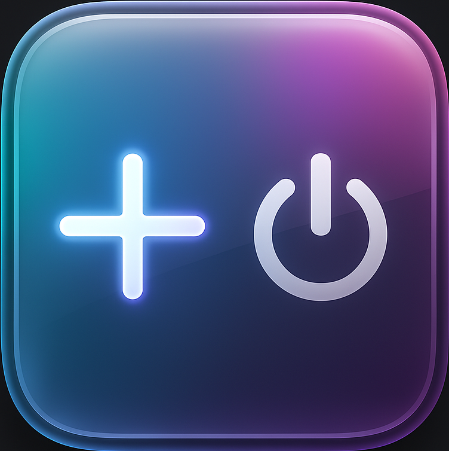

Phiên bản 0.4.9.9b • Phát hành 2025

Tweak này cho phép bạn tuỳ biến giao diện iOS, bao gồm thay đổi Control Center của iOS cũ giống với iOS26,
https://romlayvn-0411.github.io/RepoJailbreak/Mã nguồn trên GitHub: github.com/romlayvn-0411/RepoJailbreak
Nếu có vấn đề, mở Issue hoặc liên hệ @romlayvn trên Twitter.